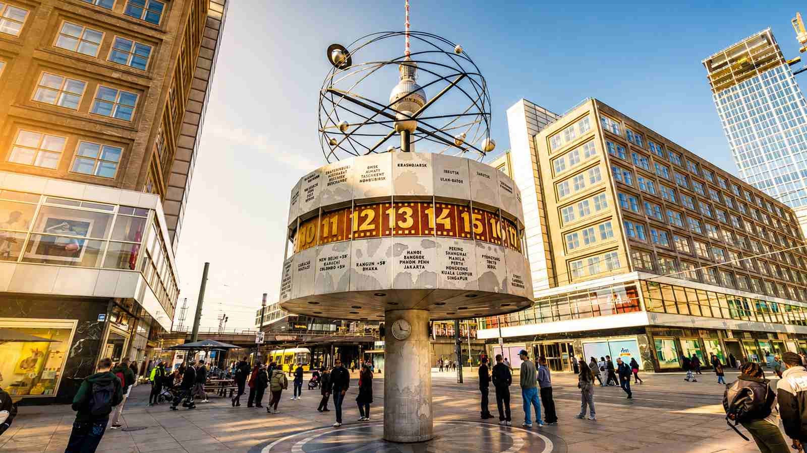

BerlinWalk dayline
Does the 12:30 walk fit your real Berlin day?
Set the earliest time you can stand at the World Clock and the latest time you must be free near Hackescher Markt.
Use realistic times after work, transport and whatever else is fixed that day. The band below is Berlin Then and Now: I meet you at the World Clock at 12:30 and we finish at Hackescher Markt at about 15:00. Come 5 minutes early. Dates change from week to week, so check the live calendar before you plan around one.
Use your meeting-point arrival, not your flight or train arrival.
I ask guests to arrive 5 minutes before the start.The walk ends at Hackescher Markt, not back at Alexanderplatz.
Add separate travel time from Hackescher Markt to your next reservation.Your usable window08:00 to 21:00 dayline
12:30 to 15:00
Your fit